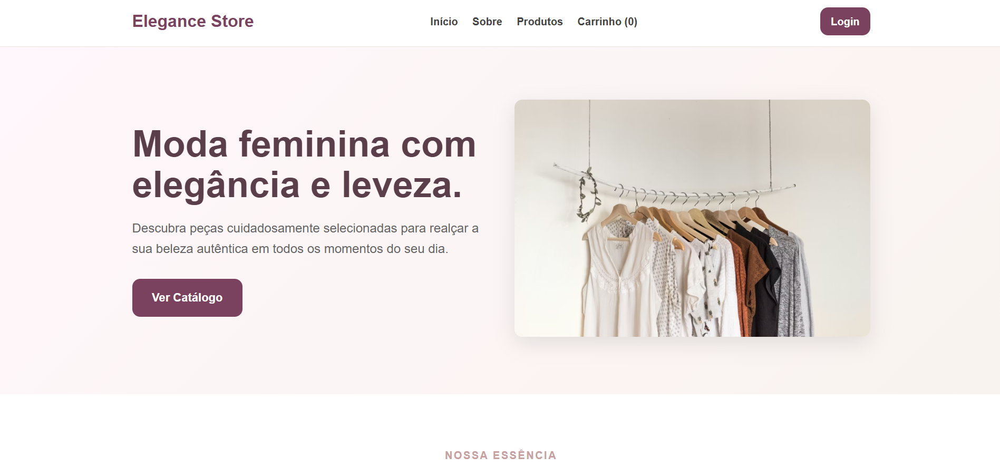

E-commerce Backend
Elegance Store
Construção e evolução de aplicação e-commerce. Desenvolvimento de APIs e manipulação de dados em tempo real.
Ver ProjetoFoco Atual
Desenvolvimento de APIs escaláveis e garantia de qualidade através de processos rigorosos de V&V.
Sobre mim
Sou estudante de Ciência da Computação (6º semestre) pela UFC – Campus Russas. Atualmente, sou estagiária participando da construção e evolução de uma aplicação web de e-commerce, focando em desenvolvimento backend, integração de APIs e manipulação de bancos de dados como MySQL e MongoDB.
Tenho perfil organizado e comprometido. Busco entender os sistemas de forma completa, valorizando a qualidade das soluções. Minha experiência com testes manuais e automatizados com Cypress e Postman me permite entregar códigos mais seguros e bem estruturados.
Trajetória
Fevereiro/2026 — Atualmente
TOP UFC RUSSAS
Atuação na construção e evolução de aplicação web de e-commerce. Trabalho com JavaScript/TypeScript, Next.js, Node.js e MongoDB, utilizando Git/GitHub para versionamento.
Setembro/2025 — Janeiro/2026
UFC - Campus Russas
Apoio técnico em planejamento de V&V, análise estática, métricas e documentação de estratégias. Prática com testes de unidade, integração, sistema e aceitação, aplicando técnicas de caixa branca/preta e testes de regressão.
Setembro/2025 — Atualmente
Centro Acadêmico Ada Lovelace
Organização de eventos acadêmicos e iniciativas sociais, como campanhas de arrecadação de alimentos e apoio comunitário.
Setembro/2023 — Abril/2025
Atlética Voraz
Responsável pela logística de eventos esportivos e sociais, desenvolvendo habilidades de planejamento, comunicação e liderança.
Conclusão prevista: 2027
UFC - Campus Russas
PET UFC (2025)
Hashtag (2024)
LearningLab (2022)
SESCOMP (2023)
UFC - Prática Acadêmica
SESCOMP (2023)
Tecnologias
Projetos

E-commerce Backend
Construção e evolução de aplicação e-commerce. Desenvolvimento de APIs e manipulação de dados em tempo real.
Ver Projeto